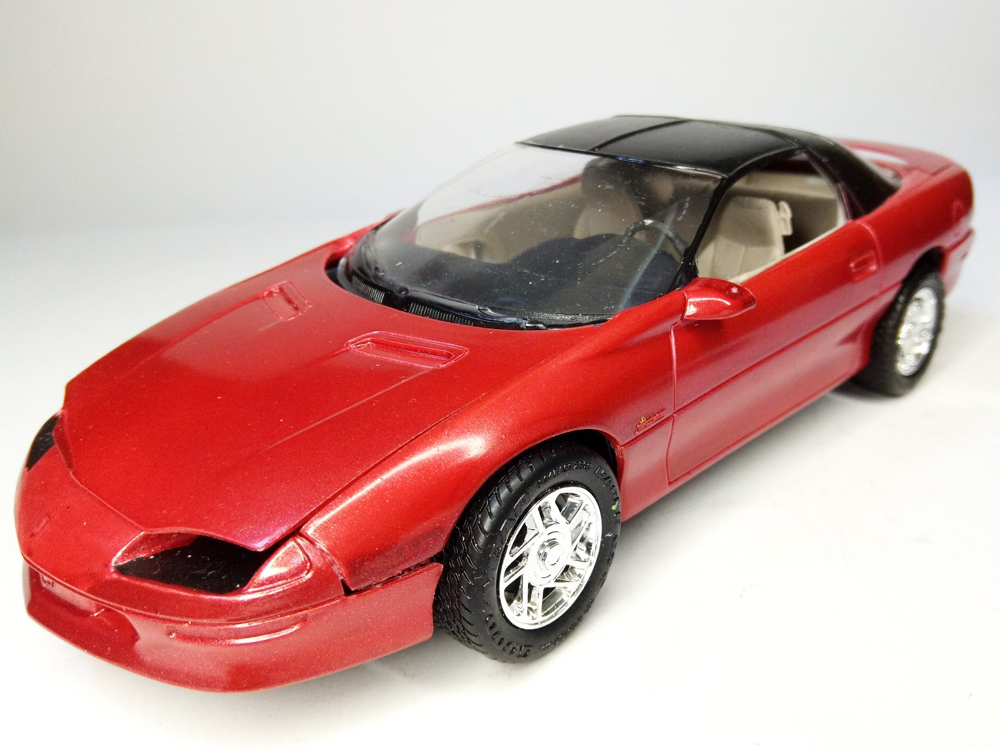
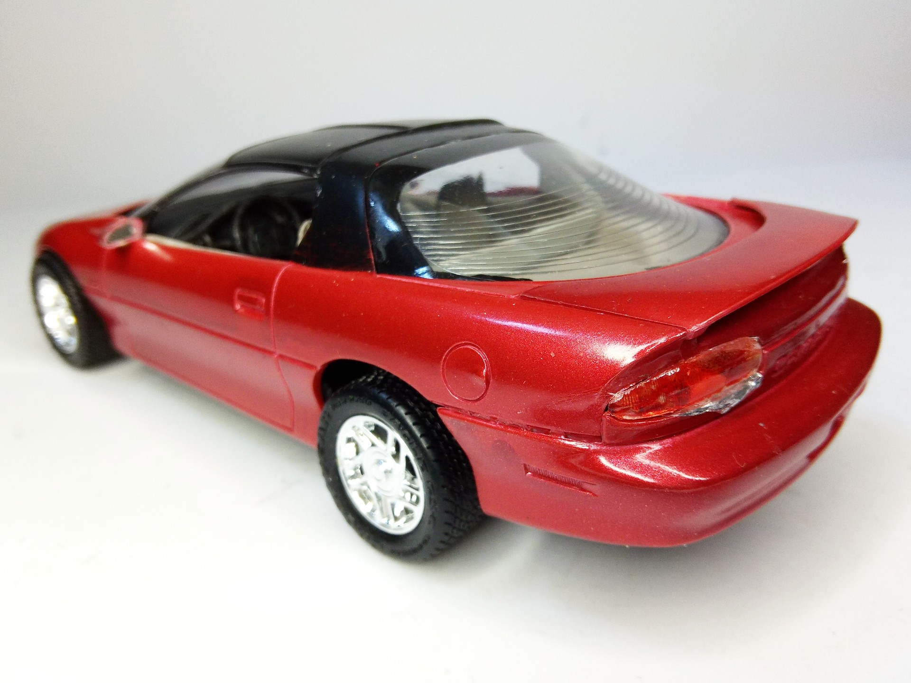
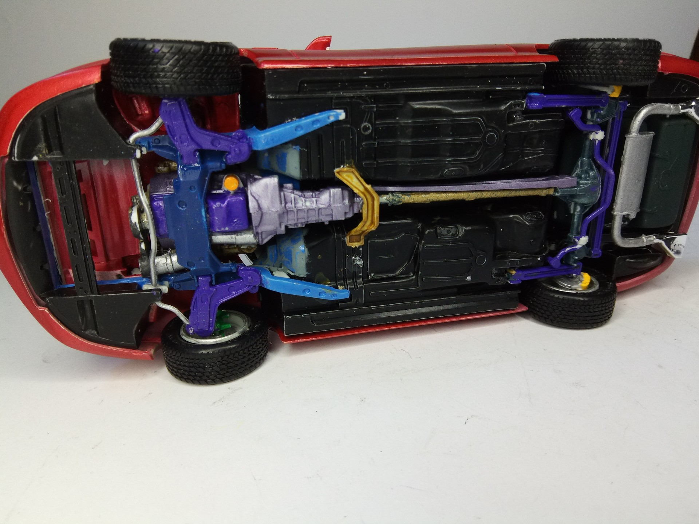

Auto e veicoli stradali · scale model archive
Pontiac Firebird
Pontiac Firebird — Kit: MPC, Scale: 1/16. Unusual scale #1/16 #MPC #Firebird

Photo gallery


English description
Unusual scale
#1/16 #MPC #Firebird
Descrizione italiana
Scala insolita.